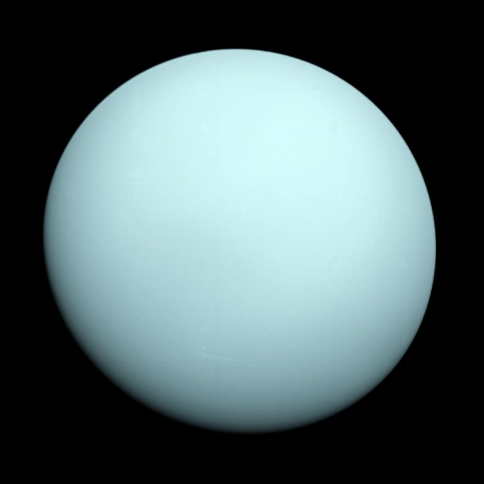

Urano
|  |
|
El dios Urano fue en la mitología griega el dios del cielo. Sin embargo, cuando los griegos se referían al objeto que brillaba en el cielo con este nombre, no se estaban refiriendo a un planeta, si no que creían que se trataba de una estrella. Para constatar que Urano se trataba de un planeta hubo que esperar hasta el año 1781, cuando fue descubierto por Sir William Herschel, quien quiso bautizarlo en honor al rey Jorge III de Inglaterra. Georgium Sidus, el nombre propuesto por Herschel para este gigante de hielo no prosperó, y la comunidad astronómica acordó en el año 1850 que este adoptara el nombre de Urano, un nombre de origen mitológico en consonancia al resto del planetas del sistema solar. Urano es el séptimo planeta en distancia al sol, el tercero más grande, el cuarto más masivo y el segundo menos denso del sistema solar. Se trata del primero de los gigantes helados de nuestro sistema planetario y está compuesto por una especie de "hielo" fluido de agua, amoníaco y metano. De hecho, el manto helado de Urano no está compuesto de hielo en el sentido convencional, sino que es un fluido caliente y denso formado por agua, amoníaco y otros volátiles. Urano es un planeta muy diferente a todos los que hemos visto con anterioridad, aunque comparte una característica especialmente excepcional con el planeta Venus, y es que rota de oeste a este. Con la salvedad, eso si, algo que lo hace mucho más especial, de que gira en un ángulo de casi 90 grados desde el plano de su órbita, lo cual hace que Urano parezca girar de costado, orbitando alrededor del Sol como una bola rodante. |